Problema
Il problema riguarda la consegna di posta da parte di un robot che si muove in un ambiente costituito da 16 stanze, 4 laboratori e un sistema di corridoi.
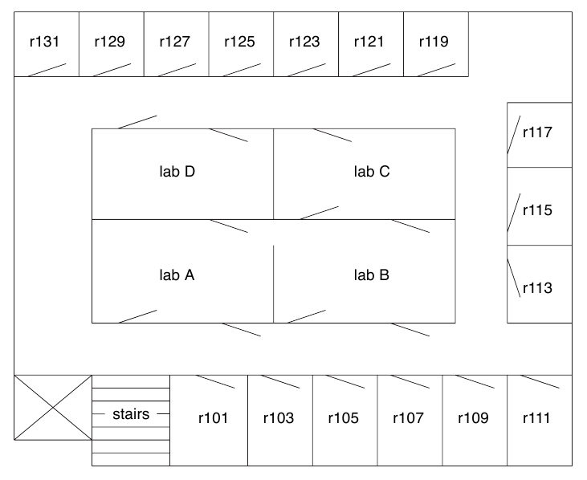
L’ambiente è modellato con un grafo i cui nodi sono i laboratori, le stanze e le posizioni del corridoio davanti a ciascuna stanza.
Il robot è inizialmente posizionato nel laboratorio A con tutta la posta da consegnare a bordo e vi ritorna dopo aver completato il percorso di consegna.
Il problema di ricerca del percorso minore è risolto
-
modellando i possibili stati del robot come nodi di un grafo;
-
modellando i passaggi di stato (cioè le azioni del robot) come archi dello stesso;
-
eseguendo un algoritmo di ricerca sul grafo degli stati sopra definito.
Stati del robot
Lo stato del robot è definito in funzione della sua posizione nell’ambiente e della posta a bordo.
Il robot può cambiare stato in due modi:
-
spostandosi da una posizione ad un’altra adiacente;
-
consegnando la posta nella stanza in cui si trova.
I costi associati alle azioni sono determinati
-
nel primo caso, dalla distanza tra le due posizioni;
-
nel secondo caso, dal costo di consegna prefissato.
Approcci di soluzione del problema
La soluzione al problema di ricerca ha inizio dal predicato go(\+NumeroStanze: integer, \+Interactive: integer, \+Strategy: integer, \+Stats: integer), dove
-
NumeroStanzedefinisce il numero di stanze in cui consegnare la posta; -
Interactiveè un valore numerico che definisce se il programma chiede interattivamente all’utente lo stato iniziale, e quindi posizione iniziale e posta da consegnare (Interactive = 1), oppure se utilizza dei valori preimpostati (Interactive = 0). Per comodità, l’esecuzione non interattiva del programma può essere avviata usando il predicatogo/3che imposta di default l’argomentoInteractivea 0; -
Strategydefinisce la strategia di ricerca, secondo la tabella seguente, in cuihè la funzione euristica e ogni strategia è dettagliata nella sezione linkata.
| Valore | Strategia |
|---|---|
0
|
Best first |
1
|
A* con h su pos
|
2
|
A* con h su pos con precalcolo di h
|
3
|
A* con h su pos e quantità posta a bordo con precalcolo di h
|
4
|
A* con h su pos e quantità posta a bordo con precalcolo di h e uso di consult
|
5
|
A* con h su pos e distanza posta a bordo con precalcolo di h
|
6
|
A* con h su pos e distanza posta a bordo da pos iniziale e allo stato finale con precalcolo di h
|
7
|
A* con h su pos e distanza posta a bordo da pos iniziale e allo stato finale con precalcolo di h e distanza e uso di nomi di predicato diversi
|
-
Statsdefinisce la modalità di raccolta delle statistiche:
| Valore | Modalità di raccolta delle statistiche |
|---|---|
0
|
nessuna statistica |
1
|
a fine esecuzione, stampa a video il tempo di esecuzione |
2
|
a fine esecuzione, stampa a video la memoria massima utilizzata |
3
|
durante l’esecuzione, stampa su file la memoria attualmente utilizzata |
Best-first
Impiegando l’algoritmo Best-first, abbiamo osservato che la memoria utilizzata non permetteva di risolvere il problema con più di 4 consegne. Infatti, nel caso con 5 consegne la memoria del global stack usata eccedeva i limiti imposti da SWI-Prolog sul computer a nostra disposizione (33.554.432 bytes).
Abbiamo quindi cominciato a pensare a possibile euristiche da utilizzare con A*.
A* con h su posizione
La prima semplice euristica che abbiamo considerato assegna a ciascun nodo del grafo un valore in funzione della distanza di Manhattan dal goal, senza considerare la posta a bordo.
Abbiamo però osservato che non era computazionalmente efficiente ricalcolare continuamente i valori euristici, ma era più conveniente effettuare un precalcolo iniziale e salvare in memoria i valori ottenuti.
A* versione 2: precalcoliamo h
Abbiamo quindi implementato un meccanismo di precalcolo dei valori euristici. I risultati hanno mostrato un evidente incremento di prestazioni:
Calcolare il valore euristico di uno stato senza considerare la posta a bordo assegna però valori euristici uguali a stati che hanno medesime posizioni ma differenti consegne da effettuare, come mostrato nell’esempio seguente.
A* versione 3: consideriamo la quantità di posta a bordo
Per risolvere la contraddizione evidenziata negli esempi precedenti, abbiamo considerato una nuova euristica che somma il numero di consegne ancora da effettuare alla distanza dalla posizione attuale allo stato finale.
Abbiamo osservato un miglioramento di prestazioni per quanto riguarda la memoria occupata
difatti è stato possibile risolvere anche il problema con 5 consegne
A fronte di questi miglioramenti, abbiamo osservato un degrado dei tempi di calcolo, probabilmente dovuto alla maggiore complessità della funzione euristica.
Infatti, mentre la funzione euristica precedente era valutata solo sulle posizioni e non sugli stati completi (ignorando quindi la posta a bordo in ciascuno stato), la nuova euristica viene valutata sugli stati.
L’euristica precedente salva in memoria tanti valori euristici quante sono le posizioni (nel nostro caso, 36), mentre la nuova euristica salva in memoria i valori di ogni stato (nel nostro caso, 36 * 2^n dove n è il numero di consegne del problema).
Poiché i valori euristici vengono salvati in memoria usando uno stesso predicato valore_h, al crescere delle asserzioni la ricerca in memoria diventa più complessa come mostrato dal profiler di SWI-Prolog.
A* versione 4: uso di consult
Invece di asserire direttamente i valori euristici calcolati, abbiamo provato a salvarli su file e poi successivamente a caricarli con consult.
Il vantaggio osservato è stato comunque del tutto trascurabile.
A* versione 5: consideriamo la distanza delle future consegne dalla posizione attuale
Per migliorare l’euristica precedente, abbiamo considerato anche la qualità della posta a bordo, stimata calcolando la somma delle distanze dalla posizione attuale alle stanze in cui il robot deve ancora consegnare e dividendo il risultato per il numero di consegne complessive del problema.
In questo modo, abbiamo osservato un miglioramento delle prestazioni sia in tempo che in spazio:
A* versione 6: consideriamo anche la distanza delle future consegne dal goal
Sulla base delle riflessioni che ci hanno portato a definire l’euristica precedente, abbiamo deciso di realizzarne una nuova che tenesse in considerazione
-
la stima delle distanze dalla posizione attuale alle stanze in cui il robot deve ancora consegnare;
-
la stima delle distanze dalle stanze in cui il robot deve ancora consegnare al goal.
In questo modo, però, gli stati in cui il robot ha già consegnato tutta la posta avrebbero avuto valore 0. Conseguentemente, abbiamo aggiunto alle due stime precedenti anche la distanza dalla posizione attuale al goal, divisa per 100 in modo che non influenzasse eccessivamente l’euristica.
I risultati ottenuti erano comunque complessivamente inferiori rispetto all’euristica precedente.
Eseguendo il profiling, abbiamo osservato che era elevato il tempo passato dall’interprete nella valutazione del predicato valore_h, che preleva dalla memoria i valori euristici precalcolati.
Quindi abbiamo cercato di ottimizzare ulteriormente l’euristica facendo sì che il precalcolo dei valori euristici asserisse predicati di nome diversi.
A* versione 7: precalcoliamo la distanza e asseriamo i valori di h usando predicati con nomi diversi
Perché l’indicizzazione automatica di Prolog sui nomi dei predicati fosse più efficace, abbiamo memorizzato i valori euristici in predicati aventi come nome una semplice rinomina della posizione.
Le statistiche raccolte confermano i miglioramenti previsti in tempo
pur con un accettabile degrado delle prestazioni in spazio.
Grafici riassuntivi
Pubblichiamo i grafici delle statistiche raccolte che differenziano i risultati trovati per ciascun algoritmo impiegato nel calcolo, in funzione del numero di consegne.
Tempo CPU
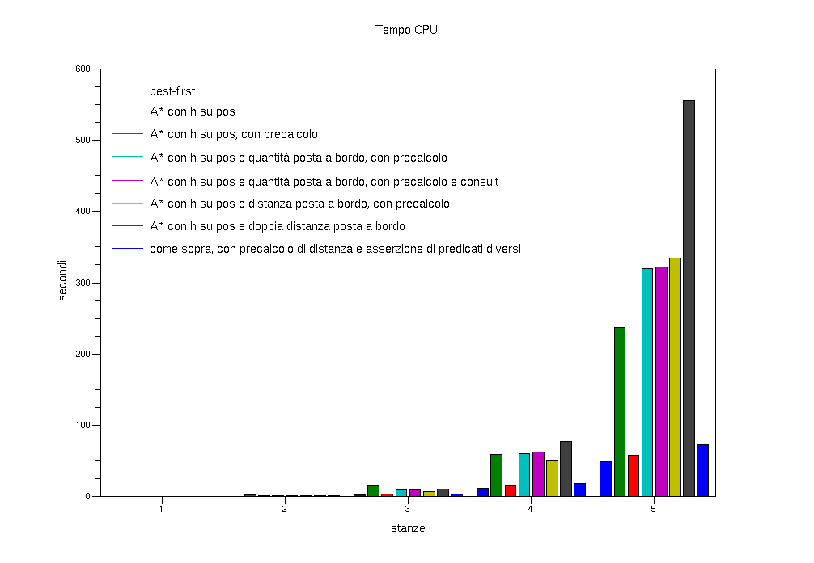
Si osserva in particolare come il precalcolo riduce drasticamente i tempi di esecuzione, ad esempio nel confronto tra la prima e la seconda versione di A*.
Tempo totale
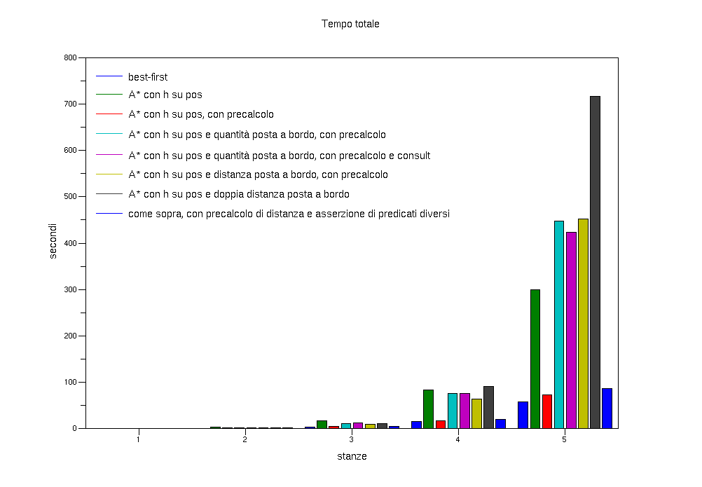
Numero di inferenze
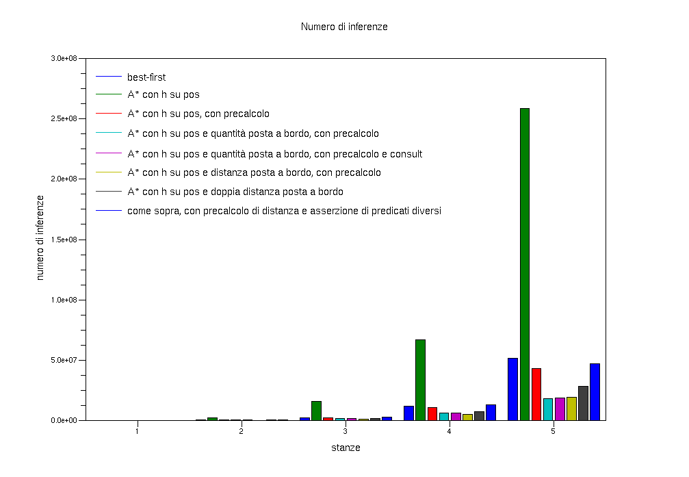
Oltre ai vantaggi evidenti del precalcolo, si osserva come euristiche più complesse richiedano un maggior numero di inferenze.
Utilizzo del global stack
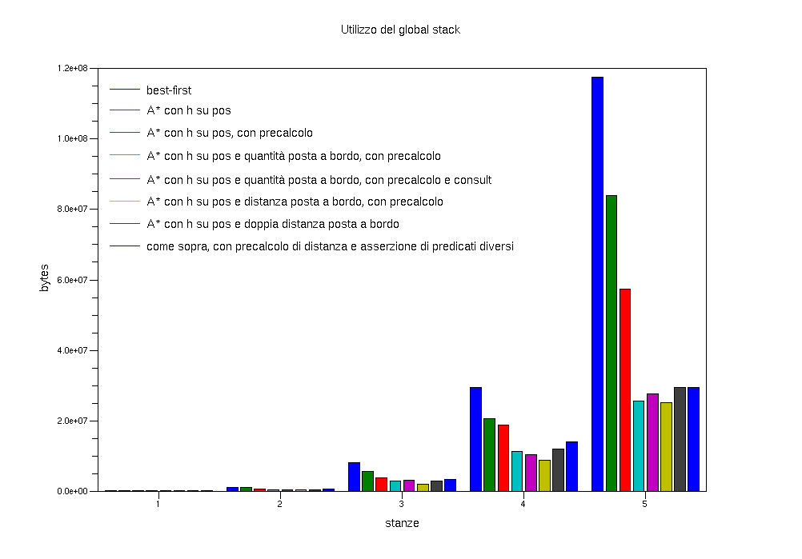
Si nota come euristiche più raffinate permettano di ridurre l’utilizzo del global stack, in quanto "guidano" in modo migliore l’algoritmo di ricerca.
Utilizzo del local stack
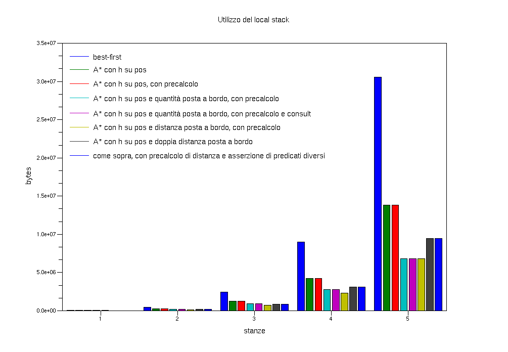
Numero di bytes in uso nel global stack
Infine, è possibile registrare in fase di esecuzione l’utilizzo della memoria impostando l’argomento Stats di go/3 o go/4 al valore 3.
La raccolta dei dati avviene in corrispondenza dell’inserimento di un nodo in frontiera.
Riportiamo a titolo di esempio il grafico ottenuto dai dati raccolti con il comando go(4,0,3).
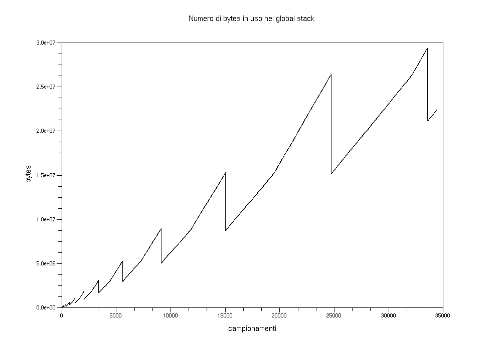
L’approccio divide et impera
E' possibile usare un approccio del tipo divide et impera per risolvere efficientemente il problema.
Invece di applicare Best-first o A* sul grafo di tutti i possibili stati del robot, è conveniente applicarli più volte su istanze ridotte del problema.
Definiamo con il termine di grafo complessivo il grafo che ha come nodi tutti i possibili stati del robot e come archi le coppie di nodi rappresentanti stati collegati da un’azione di spostamento o di consegna.
Definiamo invece con il termine di grafo ridotto il grafo che ha come nodi i soli stati di particolare interesse del robot (ovvero lo stato iniziale, quello finale e gli stati in cui esegue una consegna). Gli archi del grafo ridotto sono invece le coppie di nodi per cui vale la relazione
and(in(X),[s_1, s_2, ..., s_i, ..., s_n]) ---> and(in(s_i),[s_1, s_2, ..., s_i-1, s_i+1, ..., s_n])Si osserva che gli archi del grafo ridotto corrispondono a cammini sul grafo complessivo.
E' possibile quindi calcolare i costi degli archi del grafo ridotto impiegando un algoritmo di ricerca sul grafo complessivo, definendo opportunamente lo stato iniziale e finale.
Una volta definiti i costi di tutti gli archi del grafo ridotto, è possibile applicare un algoritmo di ricerca al grafo ridotto. Ogni arco del cammino più breve sul grafo ridotto può quindi essere espanso con i cammini risultato delle prime esecuzioni dell’algoritmo di ricerca sul grafo completo, componendo in questo modo il percorso completo dallo stato iniziale allo stato finale del problema.
Poiché l’algoritmo di ricerca lavora su un sottografo del grafo complessivo, se ne trae vantaggio in termini sia di tempo che di memoria.
A riprova, abbiamo implementato l’approccio divide et impera con il comando dei(\+NumeroStanze: integer, \+Strategy: integer, \+Stats: integer) (per la descrizione dei parametri, fare riferimento a go/3). Abbiamo quindi eseguito delle prove utilizzando l’algoritmo Best-first per il calcolo dei cammini, ed infine abbiamo messo a confronto i risultati ottenuti con le migliori statistiche degli algoritmi precedenti:
Tempo CPU
Tempo totale
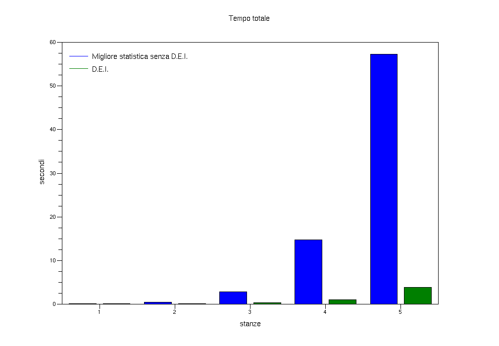
Numero di inferenze
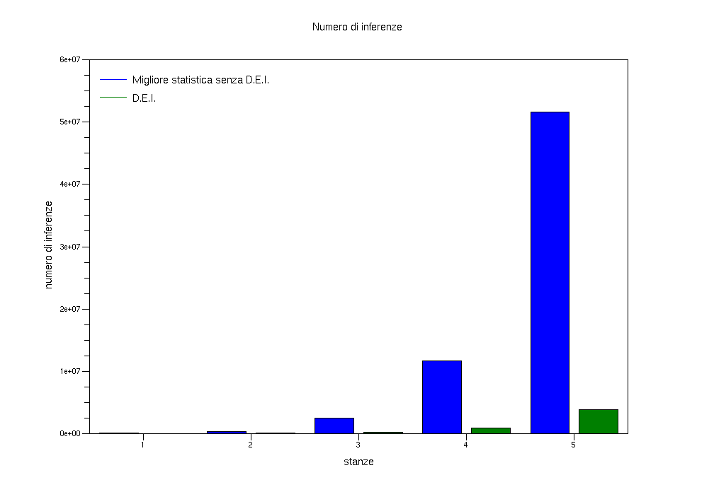
Utilizzo del global stack
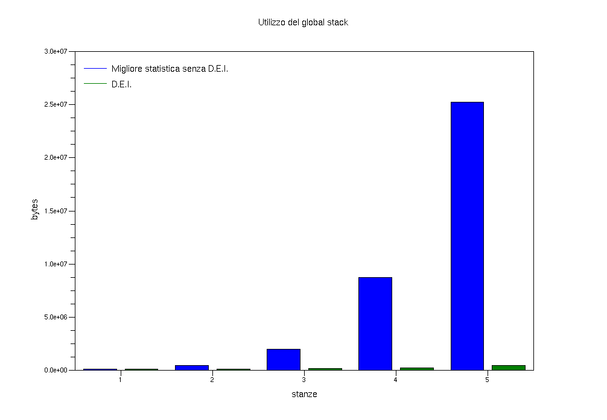
Grazie al risparmio di memoria, con questa soluzione siamo riusciti a risolvere il problema di 8 consegne senza ampliare la dimensione predefinita del global stack.
Utilizzo del local stack
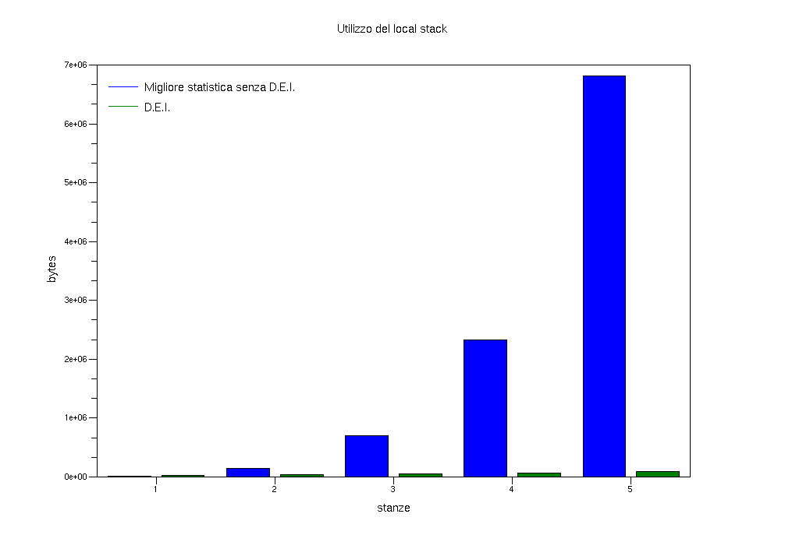
Possibili miglioramenti
Sia per l’approccio tradizionale che per l’approccio divide et impera, è possibile migliorare ulteriormente le prestazioni implementando euristiche che considerino il numero di consegne effettuate lungo ogni cammino. In questo modo, è possibile ridurre ulteriormente la dimensione del grafo su cui applicare l’algoritmo di ricerca.
Ad esempio, si potrebbe valutare la bontà di un cammino dallo stato iniziale a ciascuna stanza in funzione delle possibilità di consegne lungo quel cammino.
Appendix A: Files del progetto
| Nome file | Descrizione |
|---|---|
| a_star.pl | definisce la relazione di ordinamento che caratterizza A* |
| best_first.pl | definisce la relazione di ordinamento che caratterizza Best-first |
| cerca.pl | implementa l’algoritmo di ricerca |
| cerca2.pl | implementa l’algoritmo di ricerca (variante per D.E.I.) |
| dei.pl | implementa l’approccio D.E.I. al problema del delivery robot |
| delivery.pl | implementa l’approccio tradizionale al problema del delivery robot |
| distance.pl | implementa la distanza di Manhattan |
| euristica.pl | definisce le possibili euristiche di A* |
| frontiera_ordinata.pl | implementa la frontiera ordinata come coda di priorità |
| init.pl | contiene il codice di inizializzazione del programma |
| stats.pl | contiene il codice che implementa i contatori |
| world.pl | contiene il modello dell’ambiente |
Appendix B: Requisiti di sistema
Il progetto richiede i seguenti software (vengono indicate anche le versioni testate):
| Software | Versione | Importanza | URL |
|---|---|---|---|
| SWI-Prolog | 5.6.50 | necessario | http://www.swi-prolog.org |